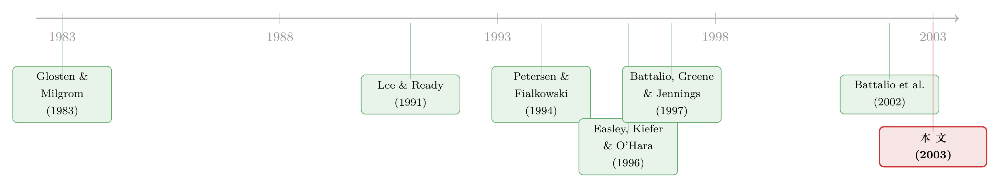

你的单子被卖去了「小交易所」，你该不该担心？
本文读的是 Peterson & Sirri (2003, Review of Financial Studies)：当你用一份罕见的「逐笔订单」数据，去真刀真枪地量一量散户单子在纽交所与五家地方交易所的成交质量，那个「经纪商把你卖了」的恐怖故事并不成立——主市场（NYSE）的市价单成本确实最低，但人们最担心的「优先成交（preferencing）」交易所，不仅不比其他地方所差，多数时候还更好；而到了限价单这边，地方所反而把单子成交得更勤、成本也不见得更高。
1 一个让人「心里咯噔一下」的问题
先讲一个场景。你打电话给经纪人，说「帮我买 300 股某只纽交所上市的股票」。挂掉电话的那一刻，你默认这单会在纽约证券交易所（New York Stock Exchange, NYSE）成交——毕竟那是这只股票的「主场」，报价最密、深度最厚。可事实是，你的经纪人很可能把这张单子，转手送去了波士顿、辛辛那提，或者太平洋交易所，而且——他还因此收到了一笔钱。
这不是阴谋论。到 1996 年，对于规模小于 1000 股的交易，NYSE 的市场份额已经跌到只有 47%；500 股以下的单子，份额更低。也就是说，超过一半的散户小单，已经流向了五家地方交易所（regional exchanges）：波士顿（BSE）、芝加哥（CHX）、辛辛那提（CSE）、费城（PHLX）、太平洋（PSE）。
这就引出了本文作者开宗明义抛出的那个问题，几乎是带着一点挑衅的口吻——
「如果我作为客户，事先知道某个经纪商正要把我的单子送去某家特定的地方交易所成交，我会不会对跟这个经纪商做生意产生顾虑？」
为什么会有顾虑？因为这里藏着一对天然的利益冲突。把单子导去地方所的好处，落进了经纪商的口袋（一笔现金回扣，或者自家关联做市商的利润）；而万一成交更差，那份成本却是由客户、也就是你，独自承担的。法律上，经纪商对客户负有「最优执行（best execution）」的受托义务；可在这套现实的转单机制面前，这义务还守得住吗？
本文要回答的，就是这个看似简单、实则极难量化的问题。
2 两个容易被混为一谈的「坏词」
要把故事讲清楚，得先把两个常被混用的词分开。
第一个是优先成交 (preferencing)。作者给的定义很精确：它指做市商在某一特定交易所，以同样的价格，抢在已经挂在那里的客户订单之前成交的做法。换句话说，做市商「插队」了——本该轮到客户的限价单成交，却被做市商自己以principal身份吃掉。
第二个是订单流付费 (payment for order flow)。这是经纪商把单子路由到某个特定场所、以换取一笔现金的做法，价码通常是每股 2~3美分。
这两件事经济后果相似，但主体不同：前者是做市商在交易所内部「占便宜」，后者是经纪商在交易所之间「卖单子」。本文聚焦的是交易所层面的优先成交，而非经纪商层面——尽管两者的效果常常难解难分。（关于经纪商层面那笔「为你的订单付钱、结果你付了更多」的账，可参见《为你的订单付钱，结果你却付了更多》；关于 Nasdaq 上同一现象的对照研究，可参见《Nasdaq 上的订单优先成交》。）
为什么优先成交「理论上」是坏事？逻辑很顺：如果做市商靠合同或回扣就能稳稳拿到单子，他就没什么动力在地方所报出有竞争力的价格了。他可以搭便车——免费蹭别家交易所、或非优先成交做市商辛苦报出来的好价格，自己却只在 NBBO（national best bid and offer，全国最优买卖报价）那条线上被动成交。更微妙的是限价单：客户挂在优先成交做市商那里的限价单，可能根本没机会跟当天涌入的订单流充分撞上，于是该成交时没成交；又或者，它要面对更严重的逆向选择。
听上去，优先成交简直是为「坑客户」量身定做的。但真相，要靠数据说话。
3 真正关键的一步：为什么「数据」本身就是贡献
这篇论文最硬核、也最值得后来者学习的地方，其实不在结论，而在它凭什么能下这个结论。
想想看，要判断一张市价单的成交「好不好」，你得算它的有效价差 (effective spread)：成交价偏离「下单那一刻的市场中间价」多远。这个看似简单的指标，离开了订单层面的数据，几乎没法算准。难点有两处：
第一，你得知道这是买单还是卖单。 没有买卖方向标记，研究者只能依赖 Lee and Ready (1991) 那类报价检验 (tick test) 去猜方向，而这种猜测是有噪声的——尤其在最小报价单位（minimum variation）很小的市场里，方向极易猜错。
第二，你得知道单子到底是几点几分到的。 因为基准价（NBBO 中点）是随时间跳动的；下单时点定错了，基准就错了，算出来的成本自然就偏。
作者手里这份数据，恰好同时解决了这两件事：它含有订单到达时间、订单规模、买卖方向标记、市价/限价的区分，以及限价单的限价。于是买卖方向不用猜，基准价不用估，成本可以被直接、干净地量出来。用作者自己的话说，离开这份数据，「估计交易方向」叠加「估计订单到达时间、进而估计基准报价」这两重误差，会给交易成本的估计带来相当大的偏差。
把这一层想透，你才会明白这篇论文为什么发在 RFS：它不是又一个回归，而是第一次把「最优执行」这个监管和学界吵了十年的问题，放到了一台真正校准过的秤上。
概念上，一张买单的有效半价差可以写成：
$$ \text{Effective half-spread} = D \times \left( P_{\text{exec}} - M_{\text{arrival}} \right) $$
其中 \(D\) 是买卖方向指示（买为 $+1$，卖为 $-1$），\(P_{\text{exec}}\) 是成交价，\(M_{\text{arrival}}\) 是订单到达交易所那一刻的 NBBO 中点。这个量大于零，说明你「付了价差」；小于零，则说明你拿到了价格改善 (price improvement)——成交得比当时的报价还划算。本文数据的全部威力，就在于 \(D\) 与 \(M_{\text{arrival}}\) 两项都是已知的、而非估计的。
4 数据与样本：一场为了「可比性」的精心裁剪
数据覆盖 1996 年 10 月 28 日到 11 月 22 日的四周（地方所），以及其中一周（10 月 28 日至 11 月 1 日，NYSE——因为纽交所订单量太大，处理能力受限）。只研究在 NYSE 上市的证券。
这里有个极易被忽略、却决定成败的处理。六家交易所做的是完全不同的生意：NYSE 靠向上市公司收费，样本里挂了 2,256 只股票，是六家里最多的；而 CSE 只交易 338 只，最少。地方所交易哪些股票，完全由交易所和会员自己挑——挑的标准，说白了就是「哪只好赚钱」。
于是一个触目惊心的事实浮现：两家优先成交交易所（CSE 与 BSE-CSI），偏偏挑了最大、最活跃、最流动的那批股票。看中位数市值：NYSE 约 $591 百万，几家非优先成交地方所在 6 亿到 10 亿出头之间；而 BSE-CSI 和 CSE，中位市值高达约 $7 十亿（$7,328 与 $6,265 百万）。日成交量也是同样的格局，优先成交所的中位成交量是 NYSE 与非优先成交地方所的好几倍。原因不难猜：大盘、高量、流动性好的票，正是散户最爱、也最可能被纳入优先成交安排的标的。
如果直接拿这六家「原样」对比，你比的就不是成交质量，而是各家挑股票的口味——典型的样本选择与内生性 (sample selection and endogeneity) 陷阱。作者（在审稿人和编辑建议下）做了一刀干净的裁剪：只保留那些同时在 CSE 和 NYSE 交易、且样本期内成交不少于 10 笔的普通股，最终得到 334 只流动证券，每家所都交易它们。这样一来，横截面上的「业务模式差异」被洗掉，剩下的差异才更可能是「成交质量」本身。
订单则被分成三类——市价单、可成交限价单（marketable limit，限价已使其立即可成交）、其他限价单；并按规模分为小（100–500 股）、中（501–1000 股）、大（>1000 股）。
5 反转：那个吓人的故事，并不成立
铺垫了这么久，结果终于登场。而结果，是一次漂亮的反转。
先看市价单。 主场效应是真的——NYSE 在大多数市场质量指标上压倒地方所，无论是报价活跃度还是有效价差。到这里，似乎印证了「别让单子离开纽交所」的直觉。
但真正关键的一步在于：在地方所内部，格局恰好掉了个个儿。人们最担心、骂得最凶的那两家优先成交交易所，不仅没有比其他地方所差，反而在多数情况下更好——它们系统性地优于那几家非优先成交的地方所（BSE-non-CSI、CHX、PHLX、PSE）。也就是说，把「优先成交」直接等同于「坑客户」，是错的。被千夫所指的优先成交机制，反倒是地方所里成交质量更高的那一档。
再看限价单，反转更彻底。 地方所执行限价单的频率更高（fill rate 更高），而其事后执行成本（ex post execution cost）与主市场相比，差别并不大。换句话说，你把限价单挂去地方所，更容易成交，且成交得也不亏。
那么，为什么地方所反而能把限价单成交得更勤？作者给了一个相当机敏的假说：地方所的限价订单簿是「薄」的——簿子上没几张单子，新来的订单自然更容易跟做市商直接成交、而非排在一堆限价单后面。而簿子为什么薄，又有两个原因：
其一，地方所的做市商可以挑客户（客户就是经纪商）。优先成交做市商会专挑那些「旗下散户不爱用限价单」的经纪商，于是簿子里限价单天生就少。
其二——这一条尤其耐人寻味——优先成交做市商会抢在限价单设定一个对自己不利的价格之前，迅速以principal身份把它吃掉。因为同一交易所里其他优先成交做市商，将不得不按这个新价格成交；与其让簿子上的限价单去拉低（拉高）大家的成交价，不如自己先把它消化掉。簿子，就这样被「主动地」保持得很薄。
把这两块拼起来，本文的中心论点就立住了：优先成交本身，并不等价于劣质执行。 它把「同一交易所内做市商之间、为单笔订单的竞争」，替换成了「不同市场中心之间、为大宗订单流的竞争」。从这个角度看，它甚至是一种促进竞争的安排——让那些本来量不够、活不下去的市场中心得以存续。
6 一个重要的边界：本文不回答的那半个问题
这里要替读者划清一条线，否则极易误读本文。
本文自始至终把路由决策当作外生 (exogenous) 的。它问的是：「单子既然送到了某家所，它在那家所的成交质量如何？」它不问：「这单要是送去别家，会不会更好？」
后一个问题，是 Battalio, Greene, Hatch, and Jennings (2002) 的地盘。他们专门研究「经纪商把客户限价单送去哪里，到底重不重要」，试图控制市场条件与下单策略，去比较同一张单子在不同场所的执行质量。他们的结论是：限价单的路由决策，对散户限价交易者而言，可能并不会产生实质性影响；但他们也给出证据，说明经纪商在某些情形下，确实能通过策略性地选择路由来改善执行。
两篇文章合在一起，才构成完整图景：本文说「单子到了地方所，成交质量没那么糟」；Battalio et al. 说「换个地方送，差别也没那么大」。一里一外，都在动摇「订单流migration必然损害散户」的成见。
7 文献脉络
把镜头拉远，这条研究线的来路是清晰的。
源头是市场微观结构的两块基石：Glosten and Milgrom (1983) 把买卖价差拆解成对知情交易者的补偿，Easley and O'Hara (1987) 进一步把价格、交易规模与信息绑在一起——它们告诉我们，价差里既有成本，也有信息。这为「成交质量该怎么量」立了规矩。
接着，一个自然的问题是：挂出来的价差（posted spread），等于你真正付出的价差吗？ Petersen and Fialkowski (1994) 给出了否定的答案——挂牌价差和有效价差可以差很多，「好价格」未必对应「好成交」。这一问，直接把「订单流去哪、成交到底好不好」推上了台面。
然后，围绕地方所与第三市场，争论白热化。Easley, Kiefer, and O'Hara (1996) 问那些被买走的订单流到底是「撇奶油（cream skimming）」还是「利润分享」；Battalio (1997) 追问第三市场的做市商究竟是成本竞争者还是撇奶油者；Bessembinder and Kaufman (1997) 做了跨交易所的执行成本比较；而最贴近本文的，是 Battalio, Greene, and Jennings (1997)——他们直接问「竞争做市商与优先成交做市商，是否影响市场质量」。

但真正关键的一步，是「数据」。前面这些研究，大多受制于「方向靠猜、时点靠估」的老问题。本文凭着一份逐笔订单数据，把有效价差、价格改善、限价单成交率、限价单事后成本，第一次在六家交易所之间做了可直接比较的测算。它所处的位置，正是这条「订单流去向 × 成交质量」研究线上，方法论意义上的一次校准。后来 Battalio et al. (2002) 把问题推向「换个地方送会不会更好」，与本文恰好互补。
评论与延伸（Q&A + 研究方向）
(a) 几个可能的疑问
Q：「优先成交不比别家差」会不会只是因为优先成交所挑了更好的股票？
这正是作者最警惕的内生性陷阱，也是他们做那一刀裁剪的原因。表 1 清清楚楚显示，CSE 与 BSE-CSI 挑的是中位市值约
$7十亿的大盘活跃股，而 NYSE 中位仅$591百万。直接比就是比口味。所以他们把样本限定在334只「六家所共同交易、CSE 上成交≥10 笔」的流动股上，让大家比的是同一批股票。结论是在这个可比集合里得到的，可信度因此大幅提高。
Q：市价单 NYSE 最便宜，那「别让单子离开纽交所」不就对了吗？
对一半。NYSE 确实在市价单上成本最低、报价最优——这一点本文从不否认。但本文的核心不在「主场 vs 地方所」，而在「地方所内部，优先成交 vs 非优先成交」。监管和舆论的火力，恰恰对准了优先成交；而数据说，在被骂的这一档里，优先成交反而是更好的那个。结论的精妙之处，正在于它没有简单地替任何一方背书。
Q：限价单在地方所「成交率更高」，难道不是好事被说成了坏事？
要分两面看。成交率高，对急于成交的人是好事。但作者点出了机制的另一面：优先成交做市商之所以让限价单成交得快，部分是因为他抢在限价单「设定一个对做市商不利的价格」之前，以principal身份把它吃掉了。也就是说，高成交率里，混着「插队」的成分。好在事后执行成本与主市场差别不大，所以净效果对散户不算坏——但这不是「天上掉馅饼」，而是机制使然。
Q：把路由当外生，是不是回避了最要害的问题？
算是一个诚实的取舍。最要害的问题——「这单送别处会不会更好」——需要反事实，本文数据做不到，于是明确交给了 Battalio et al. (2002)。本文只严谨地回答「单子到了这家所，质量如何」。把能干净回答的问题答到位，把答不了的明说，是一种值得学的克制。
Q：为什么不直接用 TAQ 数据做，非要这份「私货」？
因为 TAQ 没有买卖方向标记，也没有订单到达时间。要算有效价差，方向得用 tick test 猜、时点得估，两重误差叠加，在最小报价单位很小的市场里尤其失真。本文数据自带方向与到达时间，\(D\) 和 \(M_{\text{arrival}}\) 都是已知量，这才是它能下定论的根本。数据覆盖度上，样本占 TAQ 各所成交笔数的 50% 以上（按量则不到 50%，因为系统单子多为散户小单）。
Q：1996 年、一美分还没出现的旧市场，结论今天还算数吗？
要谨慎。当时还是分数报价、最小变动较大的世界，2001 年十进制化（decimalization）之后，价差结构、价格改善空间都变了。所以本文的具体量级未必能外推到今天，但它的方法论与核心洞见——「优先成交≠劣质执行」「没有订单数据就量不准成交质量」——是经得起时间的。
(b) 几个可能的研究问题与提案
1. 把这套逻辑搬到公司债市场。 【经济故事】公司债是典型的 OTC、做市商主导市场，「订单流去向」由交易商关系网决定，与本文的地方所优先成交有神似之处：客户的单子被导给特定交易商，定价权严重不对称。本文「优先成交可能是竞争、而非纯掠夺」的视角，正好可以用来重新审视债市的客户—交易商关系。 【可行性】高。TRACE 加上监管版的客户身份数据，可识别「同一只债、同一时点、不同交易商」的执行成本差异，做类似的可比集合裁剪。难点在于债券成交稀疏，需要 size-adapted 的流动性度量（这条线可参见《把「成交价」从「成交量」里解放出来》）。
2. 外资订单流是否被「区别路由」？ 【经济故事】如果做市商能挑客户、挑经纪商，那么不同类型的最终投资者（本地散户 vs 外资机构）很可能被系统性地导向不同场所、拿到不同执行。本文揭示的「挑客户」机制，天然指向一个分配问题：谁拿到了好执行，谁被留给了薄簿子。 【可行性】中。需要带投资者类型标签的订单数据（如某些新兴市场的监管数据库），识别上可用经纪商×场所固定效应去剥离路由偏好。doable，但数据门槛高。
3. 十进制化是优先成交的「分水岭」吗？ 【经济故事】最小报价单位收缩，会同时压薄做市商的价差利润与价格改善空间。理论上，这应当削弱「优先成交做市商抢吃限价单」的动机——簿子的动态会变。这是一个干净的、由制度变更驱动的自然实验。 【可行性】高。围绕 2001 年 decimalization 做事件研究（event study），比较优先成交所与非优先成交所在成交率、事后成本上的差分变化。数据是公开的 TAQ，识别靠的是制度时点的外生性。
4. 「薄订单簿」假说能不能被直接检验？ 【经济故事】本文对限价单结果给的是一个机制假说——地方所簿子薄，故成交率高。但「薄」本身是被「挑客户 + 主动吃单」内生地造出来的。把这个内生过程显式建模并检验，是一篇独立论文。 【可行性】中。需要限价订单簿的逐层快照数据；识别上可比较「做市商以principal吃掉限价单」的频率与该单本会设定的价格之间的关系，看是否如假说所言「专挑会拉坏价的单子下手」。
我的判断
这篇论文的贡献，是把一个吵了十年、却谁都没有干净数据的政策争论，第一次放到了一台校准过的秤上。它最大的价值不在某个系数，而在于用数据驯服了一个直觉：「订单流离开主市场 = 散户被坑」这个看似天经地义的故事，一旦你能精确测量，就碎成了更细的层次——主市场在市价单上确实最优，但优先成交并不是地方所里的坏学生，反而常是好学生；限价单在地方所甚至成交得更勤。把「优先成交」从「劣质执行」里剥离出来，是它真正的思想贡献。
对识别，我有两点保留。其一，路由外生这个假设是全文的阿喀琉斯之踵——它让本文无法回答「最该问」的反事实问题，只能与 Battalio et al. (2002) 拼图。其二，那个解释限价单结果的「薄订单簿」假说虽然机敏，但在本文里更多是事后讲故事，而非被直接检验的因果链；「挑客户」与「主动吃单」两条机制孰轻孰重，仍是开放的。
后续我最想看到的，是把这套「有订单数据才量得准」的方法论，搬到十进制化之后乃至今天的碎片化市场里重做一遍——以及搬到公司债这类做市商主导、客户—交易商关系更不透明的市场里去（这正与《报价，是邀请，还是暗号？》 和《集中，到底是谁的福利？》 所追问的方向相接）。当「成交质量」的秤越来越准，我们才会越来越清楚：那张被卖去小交易所的单子，到底是被坑了，还是被一种我们误读了的竞争悄悄保护着。
参考文献
- Battalio, R. (1997). Third Market Broker-Dealers: Cost Competitors or Cream Skimmers? Journal of Finance 52, 341–352.
- Battalio, R., Greene, J., and Jennings, R. (1997). Do Competing Specialists and Preferencing Dealers Affect Market Quality? Review of Financial Studies 10, 969–993.
- Battalio, R., Greene, J., Hatch, B., and Jennings, R. (2002). Does the Limit Order Routing Decision Matter? Review of Financial Studies 15, 159–194.
- Bessembinder, H., and Kaufman, H. (1997). A Cross-Exchange Comparison of Execution Costs and Information Flow for NYSE-Listed Stocks. Journal of Financial Economics 46, 293–319.
- Easley, D., Kiefer, D., and O'Hara, M. (1996). Cream Skimming or Profit Sharing? The Curious Role of Purchased Order Flow. Journal of Finance 51, 811–833.
- Easley, D., and O'Hara, M. (1987). Price, Trade Size, and Information in Securities Markets. Journal of Financial Economics 19, 69–90.
- Glosten, L., and Milgrom, P. (1983). Bid, Ask, and Transactions Prices in a Specialist Market with Heterogeneously Informed Traders. Journal of Financial Economics 14, 71–100.
- Lee, C., and Ready, M. (1991). Inferring Trade Direction from Intraday Data. Journal of Finance 46, 733–746.
- Macey, J., and O'Hara, M. (1997). The Law and Economics of Best Execution. Journal of Financial Intermediation 6, 188–223.
- Petersen, M., and Fialkowski, D. (1994). Posted Versus Effective Spreads: Good Prices or Bad Quotes? Journal of Financial Economics 35, 269–292.
- Peterson, M. A., and Sirri, E. R. (2003). Order Preferencing and Market Quality on U.S. Equity Exchanges. Review of Financial Studies 16(2), 385–415.